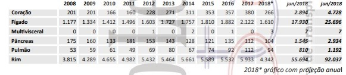

Doação de órgãos e tecidos consiste na remoção de órgãos e tecidos do corpo de uma pessoa que recentemente morreu (doador cadáver) ou de um doador voluntário (doador vivo), com o propósito de transplantá-lo ou fazer um enxerto em outras pessoas vivas. Os órgãos e tecidos são removidos com procedimentos similares a uma cirurgia, e todas as incisões (cortes) são fechadas após a conclusão da cirurgia. Estes procedimentos são realizados para que a pessoa em seu funeral não seja reconhecida como uma doadora por apresentar deformações e cortes visíveis. Pessoas de todas as idades podem ser doadores de órgãos e tecidos.
A idade do doador é menos importante do que o estado do órgão a ser doado; no entanto, é raro serem usados órgãos de pessoas com mais de 70 anos de idade.
No mundo inteiro há uma grande falta de doadores e isso faz com que surja grandes listas de espera. Muitos pacientes que esperam um coração, um fígado ou um pulmão morrem, pois não há nenhum órgão à disposição.
SEJA PARTE IMPORTANTE DA VIDA DE ALGUÉM. DOE ÓRGÃOS.
Sobre o Blog
O OrganBlog foi criado com o intuito de incentivar, tirar todas as dúvidas possíveis e desmistificar a doação de órgãos, apresentando informações e dados que mostrem a importância de ser um doador de órgãos e salvar milhares de vidas a espera de ajuda.
Postagens
Como ser um doador
Para ser um doador, basta conversar com sua família sobre o seu desejo de ser doador e deixar claro que eles devem autorizar a doação de órgãos.
A doação de órgãos só será feita após a autorização familiar.
Há dois tipos de doador:
1 - O primeiro é o doador vivo. Pode ser qualquer pessoa que concorde com a doação, desde que não prejudique a sua própria saúde. O doador vivo pode doar um dos rins, parte do fígado, parte da medula óssea ou parte do pulmão. Pela lei, parentes até o quarto grau e cônjuges podem ser doadores. Não parentes, só com autorização judicial.
2 - O segundo tipo é o doador falecido. São pacientes com morte encefálica, geralmente vítimas de catástrofes cerebrais, como traumatismo craniano ou AVC (derrame cerebral).
Os órgãos doados vão para pacientes que necessitam de um transplante e estão aguardando em lista única, definida pela Central de Transplantes da Secretaria de Saúde de cada estado e controlada pelo Sistema Nacional de Transplantes.
Postado em: 22/03/2018
Número de Transplantes até 2018

Postado em: 30/04/2018
Mitos e Verdades
Para ser um doador, não é necessário deixar nada por escrito em nenhum documento?
Verdade. Para ser doador basta avisar os familiares de primeiro ou segundo grau (pai, filho, irmãos, avós, cônjuges), pois serão eles que assinarão o documento autorizando a doação dos órgãos e tecidos.
A doação deixa o corpo deformado?
Mito. Os órgãos e tecidos doados são removidos por meio de uma cirurgia. Portanto, a doação não desfigura o corpo.
A doação de órgãos beneficia muitas pessoas?
Verdade. Um único doador de órgãos e tecidos pode beneficiar pelo menos 10 pessoas que aguardam por um transplante de órgão ou tecido.
A família do doador precisa arcar com os custos relacionados à doação?
Mito. O doador ou sua família não tem custos nem ganho financeiro com a doação dos órgãos ou tecidos.
Postado em: 03/10/2018
Órgãos que podem ser doados
Em vida: parte do fígado, parte do pulmão, medula óssea e um dos rins.
Após a morte: rins, pulmões, coração, válvulas cardíacas, fígado, pâncreas, córneas, ossos, cartilagem, tendão, veias e pele.
Postado em: 14/12/2018
Depoimentos
William Miguel
Perdi meu irmão José ano passado. Um pouco antes dele falecer, já no hospital, me falou que tinha o desejo de que todos os seus órgãos fossem doados. Como nossos pais ja faleceram, eu mesmo assinei o documento necessário. Assim que José partiu, os órgãos foram retirados e doados a uma bebe recém nascida que estava na fila de espera.
Leticia Silva
Doei um dos meus rins para um hospital na cidade onde eu moro. Fiquei muito feliz quando soube que a pessoa que estava na lista de espera recebeu ele e ficou bem novamente. Muito gratificante fazer parte da vida de algúem com um gesto como esses.
Marie Kondo
Na minha familia, minha avó e minha tia doaram seus órgãos quando faleceram. Os órgaos das duas salvaram varias vidas e deram a chance dos receptores serem felizes novamente. Pretendo seguir o exemplo delas e quando chegar a minha hora, doar meus órgãos e fazer a alegria de outra pessoa.
Edgar Pereira
O coração de outra pessoa salvou minha vida! Por muito pouco, não chegou a minha hora, graças a um doador que escolheu doar seu coração quando partisse, tive a chance de viver de novo. Espero que ele descanse em paz, ele sempre será lembrado por mim.